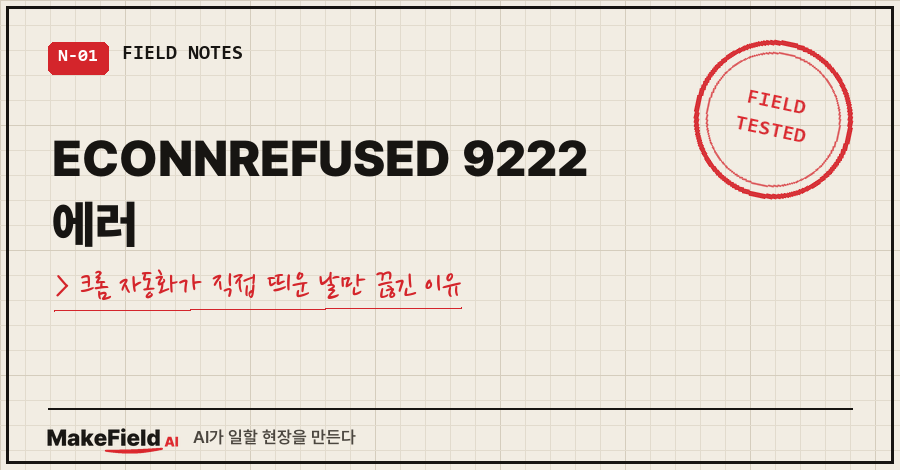
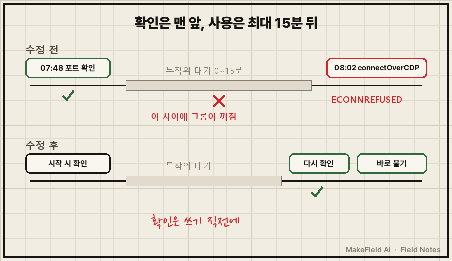
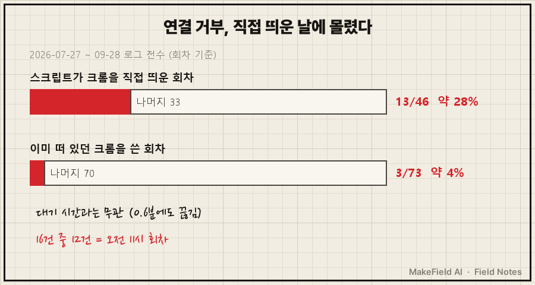
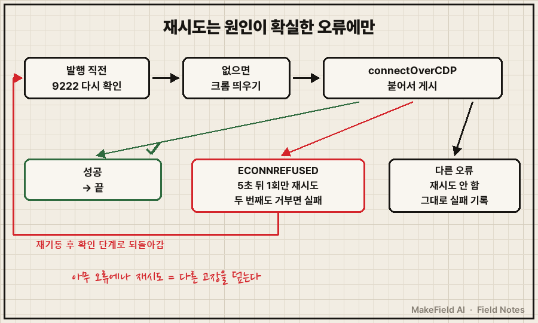

07:48:39 크롬 미가동 → 기동 1
07:48:49 크롬 포트 정상
07:48:57 | (로그인 상태 검사 통과)
08:02:02 | ERROR: browserType.connectOverCDP: connect ECONNREFUSED 127.0.0.1:9222
08:02:02 | Call log:
08:02:02 | - <ws preparing> retrieving websocket url from http://127.0.0.1:92229월 28일 아침, 제 개인 자동화 로그에 찍힌 줄이에요.
10초 전엔 "포트 정상"이었는데, 13분 뒤 붙으려니까 연결 거부.
결론부터 적으면, ECONNREFUSED 9222는 그 순간 9222번 포트에 크롬이 없다는 뜻이에요. 시작할 때 확인했다고 안심하면 안 되고, 크롬에 붙기 바로 직전에 다시 확인하고 거부되면 한 번만 다시 띄워 재시도하는 게 제가 찾은 처방이었습니다. 제 경우 7월 말부터 두 달 동안 같은 에러가 16번 났고, 그중 13번이 스크립트가 크롬을 직접 띄운 날이었어요.
제조 현장에서 자동화·제어 일을 15년째 하고 있어요. 집에서도 그 버릇대로 개인 자동화를 여럿 돌리는데, 이건 SNS에 하루 두 번 짧은 글을 올리던 스크립트에서 생긴 일입니다.
1. ECONNREFUSED 9222는 정확히 무슨 뜻일까
크롬을 --remote-debugging-port=9222 옵션으로 띄우면, 프로그램이 그 포트로 크롬을 조종할 수 있어요. 이걸 원격 디버깅 포트라고 부릅니다. 파이썬·노드에서 많이 쓰는 플레이라이트(Playwright)의 connectOverCDP가 이 포트로 이미 떠 있는 크롬에 붙는 함수고요.
ECONNREFUSED는 "그 주소로 문을 두드렸는데 받는 프로그램이 없다"는 운영체제 에러예요. 그러니까 크롬이 꺼졌거나, 9222 포트 없이 떠 있다는 얘기죠.
제 스크립트 순서는 이랬어요.
- 9222 포트에 크롬이 있는지 확인(
/json/version주소 호출), 없으면 직접 띄움 - 로그인 상태 검사
- 무작위로 0~15분 대기 (매번 같은 시각에 올라가지 않게)
- 글 준비
connectOverCDP로 크롬에 붙어서 게시
문제는 1번과 5번 사이였어요. 확인은 맨 앞에서 한 번 했고, 실제로 쓰는 건 최대 15분 뒤였거든요.

2. 로그를 세어 보니 '직접 띄운 날'에 몰려 있었어요
처음엔 대기 시간이 길면 끊기는 줄 알았어요. 15분이면 길잖아요.
그날 장애를 보던 AI가 7월 말부터 쌓인 로그를 회차별로 다 세었어요. 아래는 오늘(11월 15일) 같은 기간을 다시 세어 본 결과예요.
| 회차 조건 | 회차 수 | 연결 거부 | 비율 |
|---|---|---|---|
| 스크립트가 크롬을 직접 띄운 회차 | 46 | 13 | 약 28% |
| 이미 떠 있던 크롬을 쓴 회차 | 73 | 3 | 약 4% |
(7월 27일~9월 28일 로그 전수. 당시 AI가 8~9월 위주로 처음 센 값은 26% 대 3%였고, 범위를 넓혀도 경향은 같았어요.)
대기 시간과는 상관이 없었어요. 0.6분 기다린 날도 끊겼고, 13분 넘게 기다리고 멀쩡한 날도 많았습니다. 대신 16건 중 12건이 집 PC가 비어 있는 오전 11시 회차였어요.
그런데 크롬이 왜 꺼지는지는 그날 끝내 못 찾았어요. 로그엔 흔적이 없었고, 같은 크롬을 쓰는 다른 스크립트에서 크롬을 닫는 코드도 그때는 안 보였거든요.
여러분도 이렇게 원인은 못 찾았는데 고치긴 해야 하는 상황, 겪어 보셨죠?

3. 원인을 몰라도 막을 수 있는 방법: 쓰기 직전 재확인 + 재시도 1회
고려한 방향은 세 가지였어요.
| 방법 | 판단 |
|---|---|
| 대기 시간 줄이기 | 버림. 0.6분에도 끊겨서 근거가 없음 |
| 크롬 끄는 범인부터 찾기 | 보류. 로그에 흔적이 없어 당장 못 찾음 |
| 쓰기 직전에 다시 확인하고, 거부되면 1번만 재시도 | 채택. 원인이 뭐든 확인과 사용 사이의 틈이 사라짐 |
실제로 넣은 코드는 이렇습니다(주석은 설명용으로 붙였어요).
for attempt in range(2):
if not ensure_chrome(): # 발행 직전에 9222를 다시 확인, 없으면 띄움
log("ERROR: 발행 직전 크롬 기동 실패"); return 1
code, out = run(pub, timeout=300)
if "ECONNREFUSED" not in out:
break # 성공했거나 다른 종류 오류면 재시도 안 함
log(f"RETRY: 발행 중 크롬 연결거부 → 재기동 후 재시도 {attempt + 1}/1")
time.sleep(5)재시도는 연결 거부일 때만, 딱 한 번으로 묶었어요. 아무 오류에나 재시도를 걸면 버튼을 못 찾는 문제 같은 걸 덮어 버리니까요.
실제 발행 없이 가짜로 돌린 시험 결과예요.
1회 거부→재시도 성공: rc=0
정상 1회 성공: rc=0
2회 연속 거부: rc=1 (실패로 남김)
다른 오류는 재시도 안함: rc=1
4. AI가 "고쳐졌다"고 하지 않은 게 오히려 좋았어요
다음 날 오전 11시 회차가 어제 실패한 것과 같은 조건(크롬 직접 띄움)이었는데, 정상으로 올라갔어요. 제가 "별 문제 없나?" 물었더니 AI 답이 이랬습니다.
"오늘은 크롬이 도중에 꺼지지 않아서 새로 넣은 재시도 경로는 실제로 한 번도 쓰이지 않았습니다. 그래서 '고쳐진 게 증명됐다'보다는 '오늘은 문제가 안 났다'가 정확합니다."
맞는 말이었어요. 그 뒤 9월 29일부터 10월 10일까지 로그를 보면 연결 거부 0건, 재시도 0건, 게시 20건이에요. 재시도 코드가 일한 적은 한 번도 없었습니다. 이 자동화는 10월 10일에 다른 이유로 접었고요.
범인 후보는 일주일쯤 뒤인 10월 6일에 나왔어요. 크롬 한 대를 쓰는 자동화가 늘면서, 자기가 띄운 크롬을 끝날 때 닫는 작업이 있다는 걸 확인했거든요. 그 작업과 시간이 겹치면 남의 작업이 붙으려다 거부당하는 구조였어요. 그래서 크롬을 쓰기 직전에 잠금 파일을 잡고, 끝나면 푸는 규칙을 따로 달았습니다. 다만 9월까지의 16건이 전부 이 때문이었는지는 확인 못 했어요.
예전 글 「자동화 점검 통과했는데 실패, 초록불이 거짓말한 이유」에서 실패 유형을 셀 때도 이 연결 거부가 제일 많았는데, 그때는 원인까지 못 들어갔었네요..
5. 자주 묻는 것
Q. 크롬을 9222로 띄웠는데 처음부터 연결이 안 돼요.
크롬 136부터는 기본 프로필에 --remote-debugging-port를 붙이면 무시돼요. 크롬 공식 블로그(2025년 3월 17일)에 --user-data-dir로 별도 폴더를 지정해야 한다고 나와 있습니다. 저도 자동화 전용 프로필 폴더를 따로 씁니다.
Q. 재시도를 3번, 5번 넣으면 더 안전하지 않나요?
연결 거부가 두 번 연속이면 일시적인 틈이 아니라 크롬이 아예 못 뜨는 상황일 가능성이 커요. 그땐 실패로 남겨서 사람이 보게 하는 쪽이 낫다고 봤어요.
Q. connectOverCDP 말고 다른 방법은요?
플레이라이트 공식 문서에도 이 연결은 플레이라이트 자체 프로토콜보다 기능 충실도가 상당히 낮다고 적혀 있어요. 저는 로그인 상태를 유지한 크롬을 재사용하려고 이 방식을 골랐습니다.
정리하면, ECONNREFUSED 9222를 만나면 "크롬이 언제 꺼졌나"보다 "마지막으로 확인한 게 언제였나"부터 보세요. 다음엔 크롬 한 대를 여러 자동화가 나눠 쓸 때 건 잠금 파일 이야기를 해 볼게요.
자동화가 '가끔만' 실패해서 원인을 못 잡고 계시면, 로그를 회차별로 세는 것부터 makefield.ai에서 같이 봐 드릴게요.
출처
- Playwright 공식 문서, BrowserType.connectOverCDP("attaches Playwright to an existing browser instance using the Chrome DevTools Protocol", 예시
http://localhost:9222/, "significantly lower fidelity than the Playwright protocol connection", Chromium 계열만 지원) → https://playwright.dev/docs/api/class-browsertype (2026-11-15 확인) - Chrome for Developers 블로그, Changes to remote debugging switches to improve security (2025-03-17, Chrome 136부터 기본 데이터 폴더에서는 원격 디버깅 스위치 무시,
--user-data-dir필요) → https://developer.chrome.com/blog/remote-debugging-port (2026-11-15 확인) - 실측: 개인 SNS 자동화 로그 2026-07-27~10-10 전수 집계(2026-11-15 재집계, 계정·경로 제외)
태그: #ECONNREFUSED9222 #connectOverCDP #ECONNREFUSED #크롬원격디버깅 #remotedebuggingport #플레이라이트 #Playwright #크롬자동화 #크롬연결거부 #웹자동화오류 #파이썬자동화 #간헐적오류 #재시도로직 #막힐때해결 #MakeFieldAI